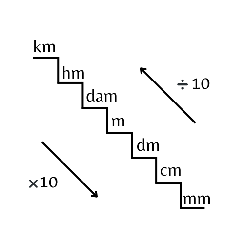
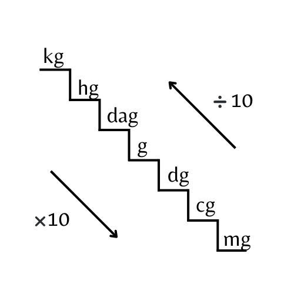

Tombol (.) digunakan sebagai koma untuk membuat angka desimal
Tombol (=) digunakan untuk menampilkan hasil
Tombol (C) digunakan untuk menghapus Nilai dan Hasil
Tombol (i) digunakan untuk memberikan informasi mengenai Nilai dan Hasil
Tombol (x) digunakan untuk menghapus input Nilai terakhir dan secara otomatis juga menghapus Hasil
#Riwayat Terakhir
Nilai
Satuan Pertama
Hasil
Satuan Kedua
Ket: Riwayat otomatis terhapus saat re-load tab browser
Apa itu Satuan Panjang
Satuan panjang adalah satuan yang digunakan dalam memberikan hasil pengukuran mengenai panjang, lebar, tinggi, dan ukuran panjang lainnya. Menurut Ajeng Ayu Winarsih (2021), Menurut Satuan Internasional (SI), standar satuan panjang adalah meter (m). Standar meter tersebut diperoleh dari jarak yang ditempuh cahaya pada ruang hampa selama 1/299792458 detik.
Sumber: MediaIndonesia.com
Hal ini lah yang membuat banyak negara menggunakan satuan panjang meter (m) termasuk Indonesia juga. Sebab, dengan menggunakan satuan yang sesuai Standar Internasional pula akan memudahkan masyarakat untuk melakukan berbagai kegiatan seperti import & export.
Di bawah ini terdapat singkatan dan kepanjangan dari satuan panjang.
Singkatan
Kepanjangan
km
kilometer
hm
hektometer
dam
dekameter
m
meter
dm
desimeter
cm
centimeter
mm
milimeter
Ket: Semakin turun maka semakin besar nilainya, karena satuannya semakin memiliki nilai kecil. Sebaliknya, semakin naik maka semakin kecil nilainya, karena satuannya sudah bernilai lebih besar.
Bagaimana Cara Menghitung Satuan Panjang Sesuai SI
Ada dua cara untuk mengkonversi satuan panjang yakni dengan cara manual dan digital. Untuk cara manual, kita dapat menggunakan gambar dibawah sebagai alat bantu untuk melakukan konversi secara lebih mudah.

Gambar Tangga Satuan Panjang
Temukan satuan pada soal di Gambar Tangga Satuan Panjang.
Apabila satuan yang dituju berada di atas satuan saat ini maka bagilah nilai tersebut dengan 10 disetiap kenaikan tangga menuju satuan yang dimaksud.
Apabila satuan yang dituju berada di bawah satuan saat ini maka kalilah nilai tersebut dengan 10 disetiap kenaikan tangga menuju satuan yang dimaksud.
Soal
50dm = .... km
Jawaban
Satuan dm menuju ke km perlu menaiki 4 anak tangga.
Oleh karena itu, nilai 50 perlu dibagi dengan 10000.
10000 didapatkan dari konstanta 10 dipangkatkan konstanta 4 (jumlah anak tangga).
Maka didapatkan nilai 0.005km
Jadi jawabannya adalah 0.005 km
Contoh Soal lain
75hm = .... mm
Jawaban
Satuan hm menuju ke mm perlu menuruni 5 anak tangga.
Oleh karena itu, nilai 75 perlu dikali dengan 100000.
100000 didapatkan dari konstanta 10 dipangkatkan konstanta 5 (jumlah anak tangga).
Maka didapatkan nilai 7500000mm
Jadi jawabannya adalah 7500000 mm
Apa itu Satuan Massa
Satuan massa adalah satuan yang digunakan dalam memberikan hasil pengukuran mengenai massa suatu benda. Menurut Arum Sutrisni Putri (2020), Menurut Kemendikbud RI, satuan standar internasional atau Sistem Satuan Internasional (SI) atau satuan dasar massa adalah kilogram.
Sumber: Kompas.com
Mengutip dari Adversia.com, Satu kilogram didefinisikan sebagai massa dari suatu silinder yang dibuat dari campuran platina-iridium. Satu kilogram standar disimpan di Sevres, Paris.
Di bawah ini terdapat singkatan dan kepanjangan dari satuan massa.
Singkatan
Kepanjangan
kg
kilogram
hg
hektogram
dag
dekagram
g
gram
dg
desigram
cg
centigram
mg
miligram
Ket: Semakin turun maka semakin besar nilainya, karena satuannya semakin memiliki nilai kecil. Sebaliknya, semakin naik maka semakin kecil nilainya, karena satuannya sudah bernilai lebih besar.
Bagaimana Cara Menghitung Satuan Massa Sesuai SI
Ada dua cara untuk mengkonversi satuan massa yakni dengan cara manual dan digital. Untuk cara manual, kita dapat menggunakan gambar dibawah sebagai alat bantu untuk melakukan konversi secara lebih mudah.

Gambar Tangga Satuan Massa
Temukan satuan pada soal di Gambar Tangga Satuan Panjang.
Apabila satuan yang dituju berada di atas satuan saat ini maka bagilah nilai tersebut dengan 10 disetiap kenaikan tangga menuju satuan yang dimaksud.
Apabila satuan yang dituju berada di bawah satuan saat ini maka kalilah nilai tersebut dengan 10 disetiap kenaikan tangga menuju satuan yang dimaksud.
Soal
20cg = .... g
Jawaban
Satuan cg menuju ke g perlu menaiki 2 anak tangga.
Oleh karena itu, nilai 20 perlu dibagi dengan 100.
100 didapatkan dari konstanta 10 dipangkatkan konstanta 2 (jumlah anak tangga).
Maka didapatkan nilai 0.2g
Jadi jawabannya adalah 0.2 g
Contoh Soal lain
75kg = .... g
Jawaban
Satuan kg menuju ke g perlu menuruni 3 anak tangga.
Oleh karena itu, nilai 75 perlu dikali dengan 1000.
1000 didapatkan dari konstanta 10 dipangkatkan konstanta 5 (jumlah anak tangga).